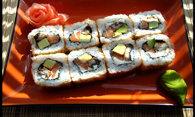

Суши, или как на них говорят японцы — суси — традиционное блюдо японской кухни, главным ингредиентом которого является рис.
Кристмасс
Урамаки ролл с мясом камчатского краба, омлетом «Тамаго» и огурцом, запеченный под сыром «Моцарелла» 305/15г
340 руб
Авокадо Кранч Маки
Ролл с нежным мясом камчатского краба, копченой курицей и авокадо. Украшается соусом «Унаги» и легким майонезом 250/15г
320 руб
Флэш
Авторский ролл в стружке тунца с копченым угрем, сливочным сыром, сладким перцем и зеленым луком в соусе «Спайси» 235/15г
275 руб
Гайда Маки
Урамаки ролл в икре летучей рыбы с начинкой из мяса краба, обжаренной в темпуре креветки и легкого майонеза 240/15г
375 руб
Патай Ролл
Оригинальный ролл с нежным лососем, угрем, икрой летучей рыбы, огурцом, авокадо и сливочным сыром 280/15г
345 руб
Патай Ролл
Сочный ролл в рисовом тесте из угря, огурца, листьев салата, икры летучей рыбы и сливочного сыра 230/15г
260 руб